Child Health · AI Agent · Oral Care
Toothbud
Toothbud
Rangers HQ牙芽奇兵局
面向 6–12 岁换牙期儿童，将刷牙、口腔观察与成长知识转化为持续可参与的冒险任务。通过 AI 陪伴、角色激励和数据反馈，让儿童主动建立口腔护理习惯。
Scroll / full project
Project
Cards
以一行两张的卡片节奏呈现研究、系统策略、角色设计、产品界面与服务闭环，便于快速浏览和分段阅读。
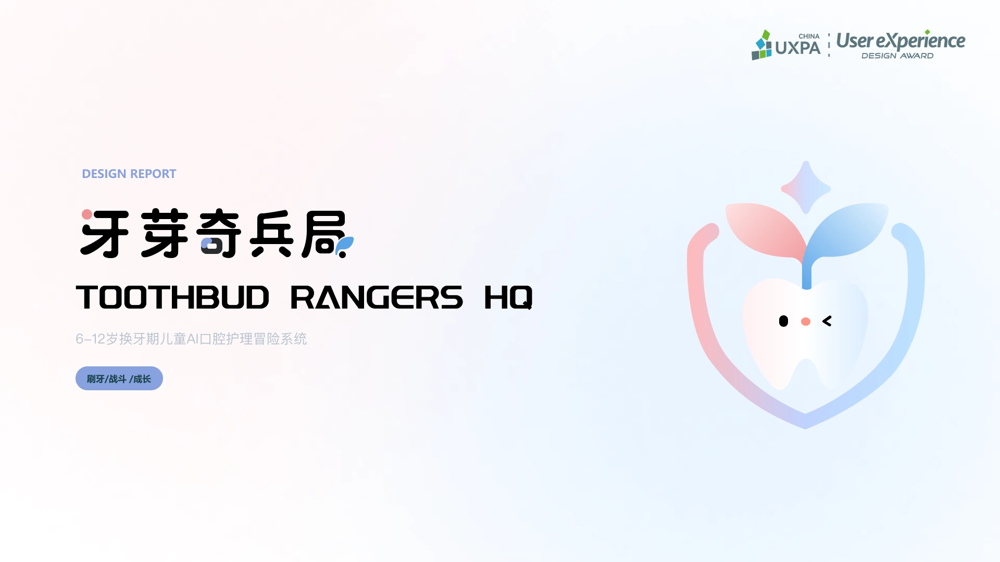
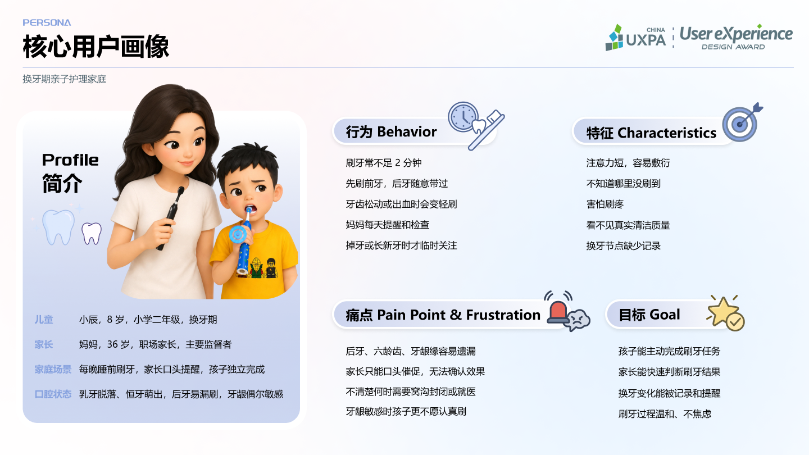
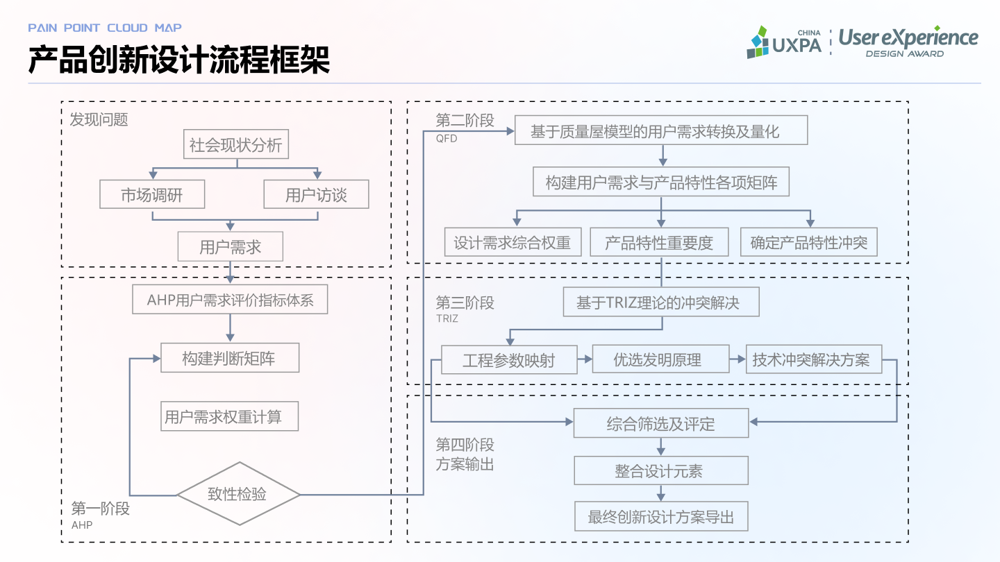
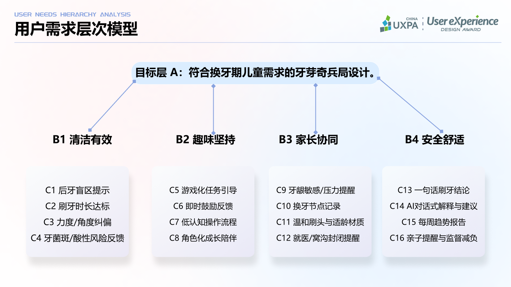
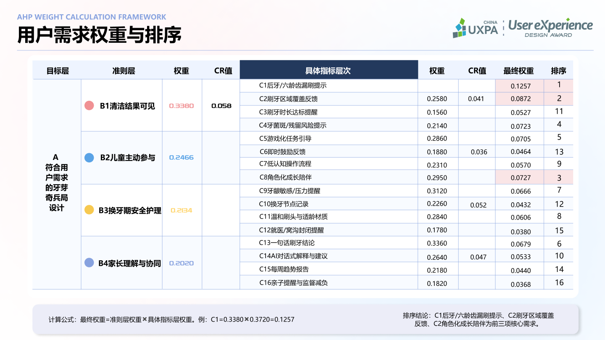
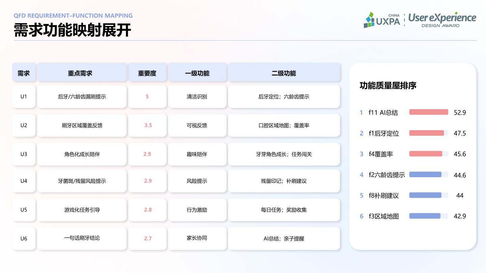
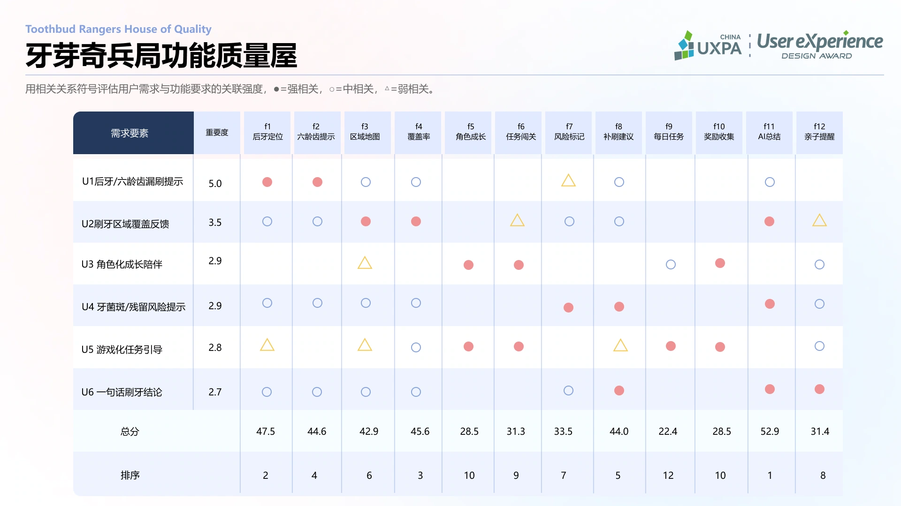
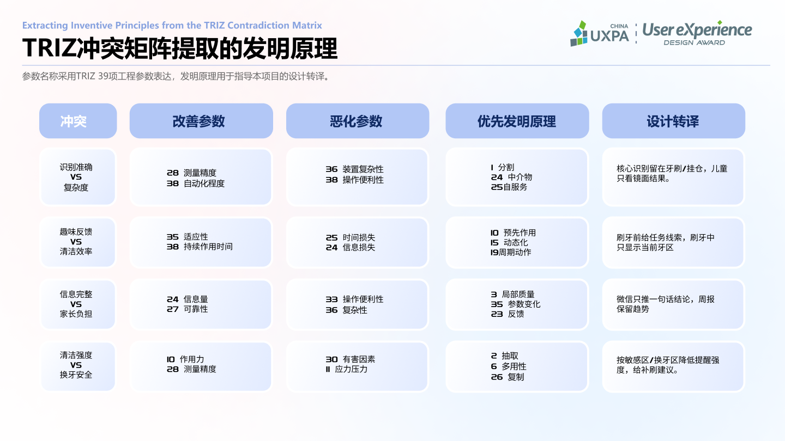
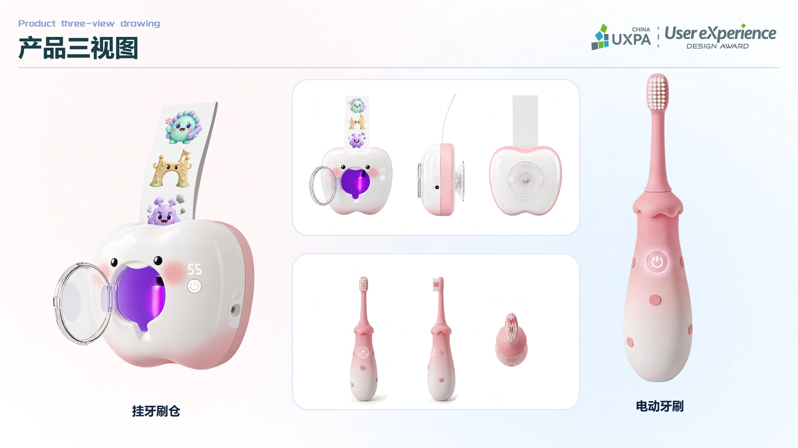
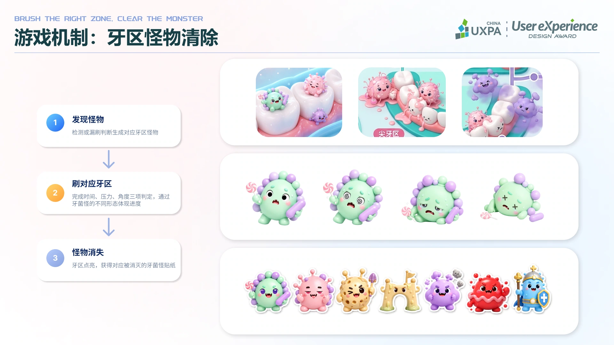
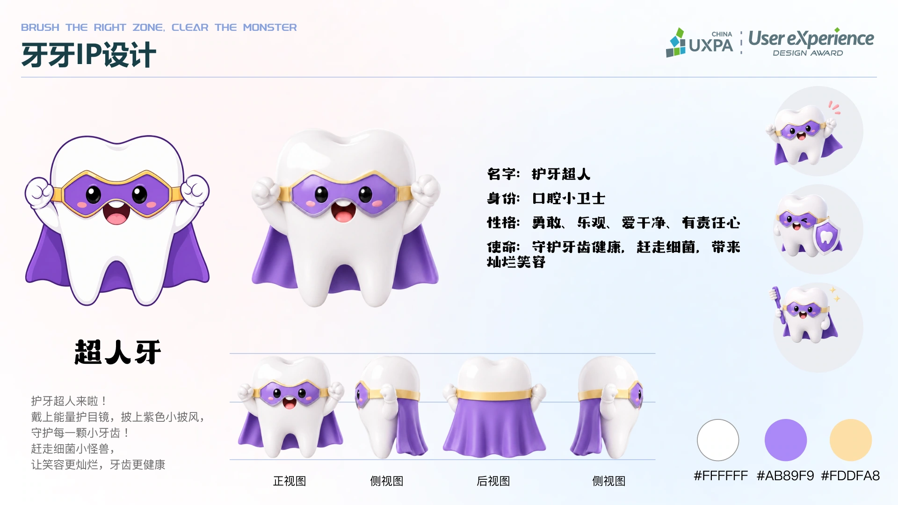
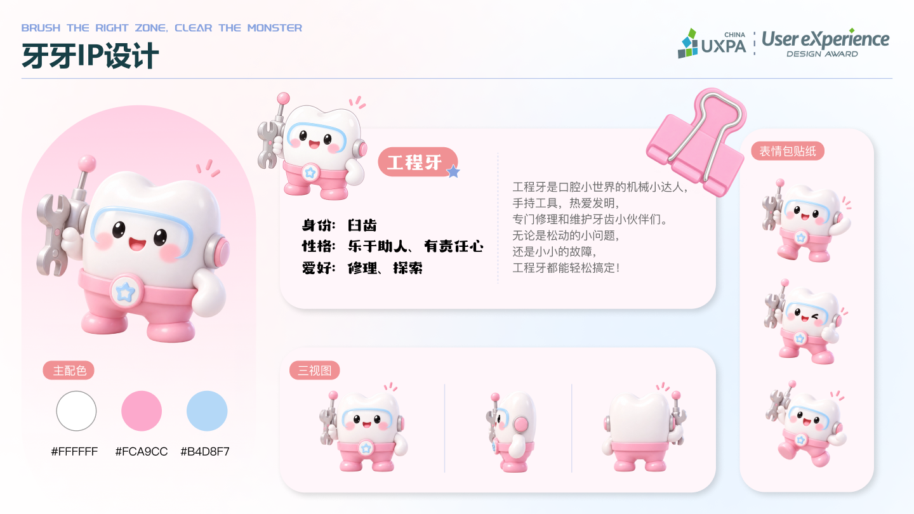
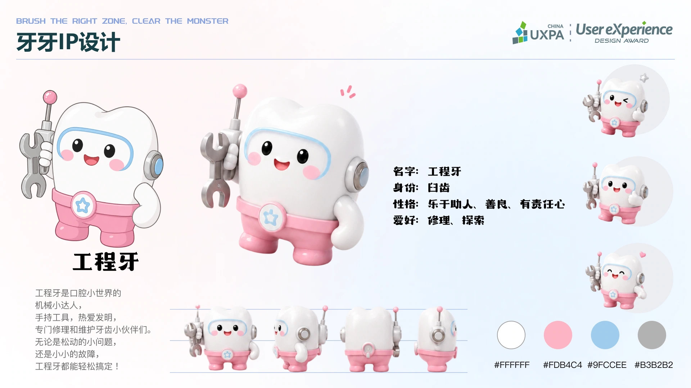
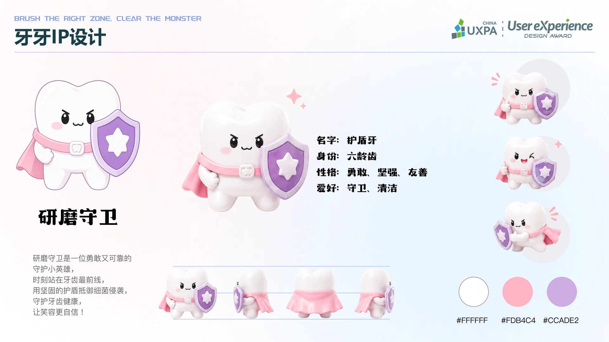
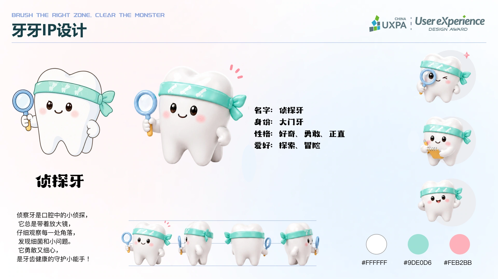
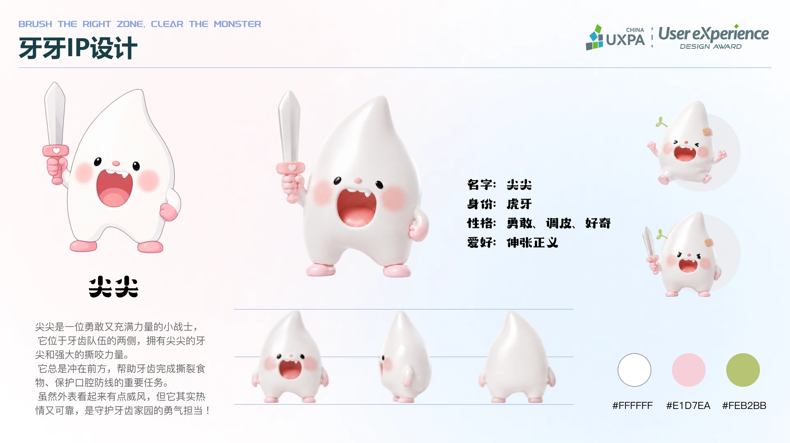
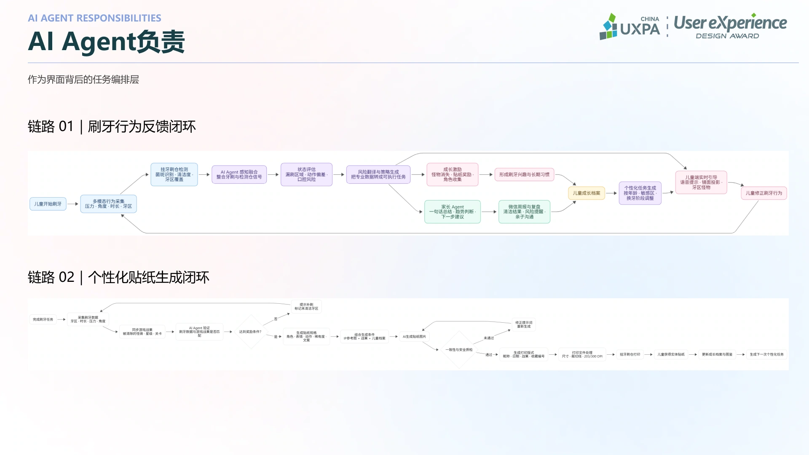
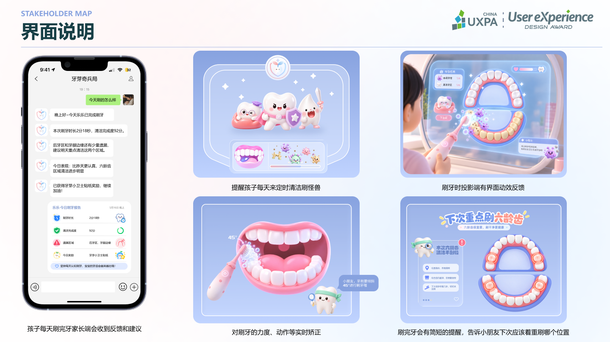